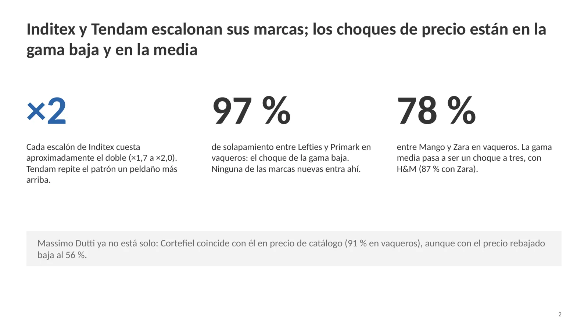
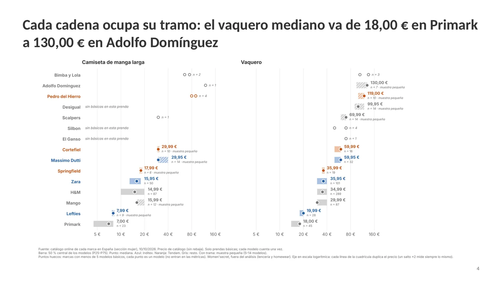
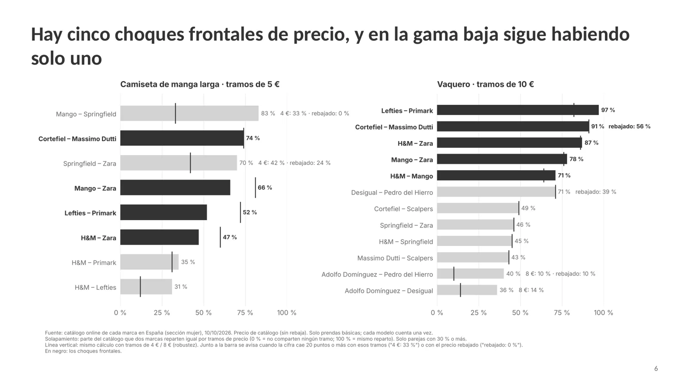
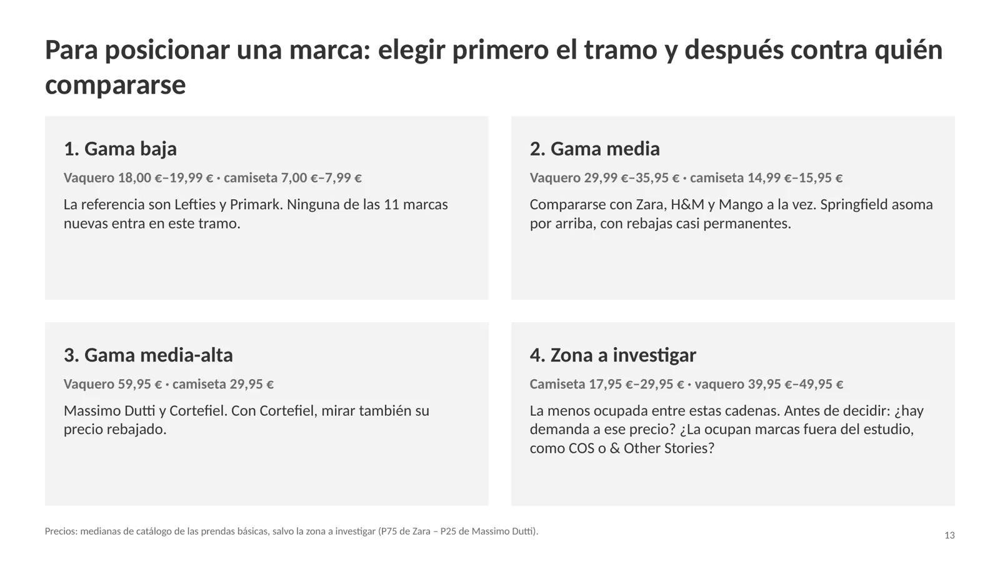
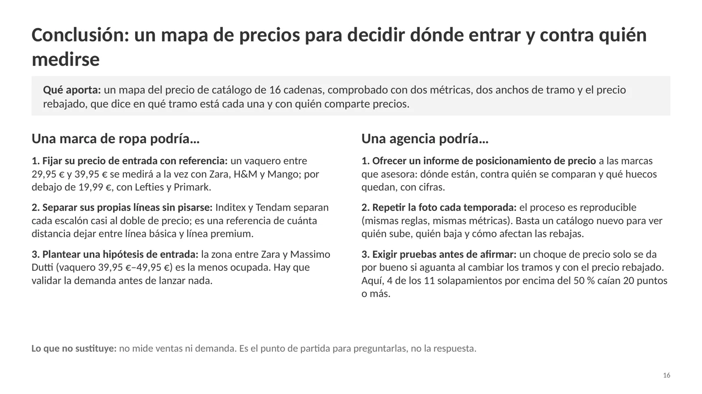

×2
cada escalón de Inditex cuesta aproximadamente el doble (×1,7 a ×2,0). Tendam repite el patrón un peldaño más arriba.
97 %
de solapamiento entre Lefties y Primark en vaqueros: el choque de la gama baja.
78 %
entre Mango y Zara en vaqueros: la gama media es un choque a tres con H&M (87 % con Zara).
16
cadenas comparadas con 1.697 modelos de su catálogo online.
La pregunta
¿Dónde se posiciona en precio cada gran cadena y con quién se solapa?
¿Escalona Inditex sus marcas sin pisarse, y dónde chocan con sus rivales?
Para quién: un equipo de marketing o una agencia que tiene que fijar el precio de entrada de una marca y decidir contra quién compararse.


Qué se compara
Dos prendas básicas, mismo criterio para todas las marcas.
- Camiseta de manga larga y vaquero largo, sección mujer. Cada modelo cuenta una vez (las variantes de color no son filas nuevas).
- Prenda básica: camiseta lisa o de canalé, sin estampado; vaquero de cualquier corte, sin rotos, tachas ni estampados.
- Métricas sobre precio de catálogo; marcas con 5 modelos o más por prenda.
- Marcas: Inditex (Lefties, Zara, Massimo Dutti) · Tendam (Springfield, Cortefiel, Pedro del Hierro; Women'secret fuera) · Mango · H&M · Primark · premium española (Desigual, Adolfo Domínguez, Bimba y Lola, Scalpers, El Ganso, Silbon).
El embudo
De 1.697 modelos a 873 prendas comparables.
- Modelos de las 16 cadenascamiseta y vaquero, sección mujer
- Prendas básicassin estampados, rotos ni tachas
- En las métricasmarcas con 5 modelos o más por prenda
Hallazgos
Escaleras dentro de cada grupo, choques entre grupos.
| Marca | Mediana |
|---|---|
| Primark | 18,00 € |
| Lefties | 19,99 € |
| Mango | 29,99 € |
| H&M | 34,99 € |
| Zara | 35,95 € |
| Springfield | 35,99 € |
| Massimo Dutti | 59,95 € |
| Cortefiel | 59,99 € |
| … hasta Adolfo Domínguez | 130,00 € |


Escalera de Inditex
Lefties → Zara → Massimo Dutti, casi al doble en cada peldaño.
Lefties → Zara ×2,0 en camiseta (15,95/7,99) y ×1,8 en vaquero (35,95/19,99); Zara → Massimo Dutti ×1,9 y ×1,7. Tendam: Springfield → Cortefiel ×1,7; Cortefiel → Pedro del Hierro ×2,0.
El espejismo de la media
H&M rodea a Zara en camisetas y choca de frente en vaqueros.
H&M parece más cara que Zara por la media (vaquero 36,38 € frente a 34,41 €) pero no por la mediana (34,99 € frente a 35,95 €): su cola cara sube la media.
Coinciden en catálogo, se separan en rebaja
Cortefiel coincide con Massimo Dutti.
A precio de catálogo, un 91 % de solapamiento en vaqueros; con la rebaja se separa (56 %).


- Por encima de 60 €, dos niveles: Scalpers en torno a 60–80 €; Desigual, Pedro del Hierro y Adolfo Domínguez en 90–135 €. Ancla de control: 0 % de solapamiento entre este tramo y Primark o Lefties (el método separa bien).
- Psicología de precio: en 10 de 20 combinaciones marca-prenda, 3 precios o menos cubren todo el catálogo de básicas. El ,95 es de Zara y Massimo Dutti; el ,99, de H&M, Lefties, Mango, Cortefiel y Springfield.
- El hueco: entre Zara y Massimo Dutti (camiseta 17,95–29,95 €, vaquero 39,95–49,95 €) está la zona menos ocupada.
Robustez
Un choque solo se da por bueno si aguanta al cambiar el ancho de tramo y con el precio rebajado.
4 de los 11 solapamientos por encima del 50 % caían 20 puntos o más. Al añadir 11 marcas al análisis original, cinco conclusiones se mantienen y dos cambian («solo dos choques» → cinco; «Massimo Dutti aislado» → Cortefiel coincide con él).
Cómo usarlo
Para posicionar una marca: primero el tramo, después contra quién compararse.
- Gama baja: vaquero 18,00–19,99 €, camiseta 7,00–7,99 € → referencia Lefties y Primark.
- Gama media: vaquero 29,99–35,95 €, camiseta 14,99–15,95 € → compararse con Zara, H&M y Mango a la vez.
- Gama media-alta: vaquero 59,95 €, camiseta 29,95 € → Massimo Dutti y Cortefiel (mirar su precio rebajado).
- Zona a investigar: camiseta 17,95–29,95 €, vaquero 39,95–49,95 € → validar demanda antes de decidir.


Limitaciones
Lo que este análisis no resuelve.
- Es posicionamiento, no estrategia.
- Es la foto de un solo día: Springfield tenía el 90 % rebajado y Cortefiel el 41 %.
- Las muestras de las marcas premium son pequeñas.
- Las básicas se clasifican por palabras clave.
- Shein queda fuera (protección anti-bot) y Women'secret también (sin vaqueros).
- Los cuartiles son aproximados con NTILE(4).
Conclusión
Un mapa de precios para decidir dónde entrar y contra quién medirse.
Un mapa del precio de catálogo de 16 cadenas, comprobado con dos métricas, dos anchos de tramo y el precio rebajado, que dice en qué tramo está cada una y con quién comparte precios.
No mide ventas ni demanda: es el punto de partida para preguntarlas.

